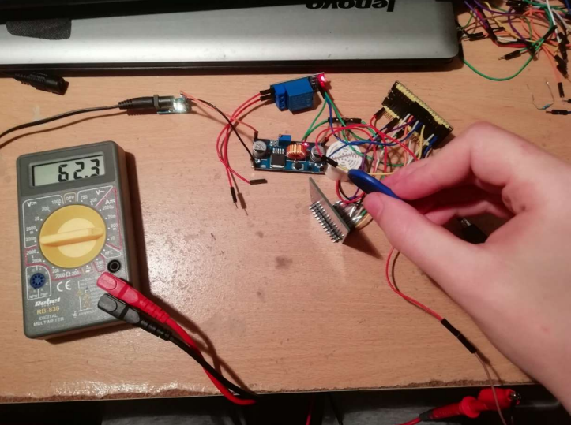

Active Projects

Scattering-based Apparatus for Portable Haematological Analysis via Optics
M. Michailidou, A. Bantis, E. Gkagkanis, K. Karakostas (AUTH)
Purpose: Fabrication of a non-invasive optical medical device for blood analysis via Mie scattering
Description: This project presents the design, fabrication, calibration, testing of a non-invasive, portable, Mie scattering-based blood quality sensor. The aforementioned prototype device currently consists of a 1500×1-pixel photodiode array sensor, a 650 nm laser diode, and a novel case designed in order to easily facilitate various kinds of optical experiments. In addition, this project also presents the results of several in-vivo and in-vitro experiments, obtained using either the current device, or previous prototypes of the device.
Publications:
Scattering measurements with the Beaglebone microcomputer for portable biomedical sensors, M. Michailidou, A. Bantis
Fabrication and Development of an Optical Biomedical Sensor, A. Bantis, M. Michailidou, E., Gkagkanis, K. Karakostas and M. E. Kiziroglou, 21WOM-05
Fabrication of a photodiode sensor system using the Beaglebone microcomputer for use in non-invasive biomedical sensors, E. Gkagkanis
PORTABLE SYSTEM DEVELOPMENT FOR MIE SCATTERING ANALYSIS, TO DETERMINE THE SIZE OF BLOOD CELLS IN IN-VIVO AND IN-VITRO STUDIES, K. Karakostas
Blood cell size determination by scattering analysis, K. Karakostas, E. Gkagkanis, K. Katsaliaki, P. Köllesperger, V. Nitsas, A. Hatzopoulos, M. E. Kiziroglou
Implementation of photodiode arrays for scattering analysis in portable biomedical sensors, I. Kavoukis
Portable optical blood scattering sensor, K. Karakostas, E. Gkagkanis, K. Katsaliaki, P. Köllensperger, A. Hatzopoulos, M. E. Kiziroglou
Acoustic Power Transfer
D. Makarikas, I. Kochliaridis, V. Fountas (AUTH), G. Papanikolaou
Purpose: Studying acoustic power transfer arrangements for energy harvesting and sensors
There are several mechanisms for transferring acoustic power. For example, the frequency response of a speaker is measured using a relatively simple power transfer arrangement. Of course, there are more sophisticated and useful applications, such as cochlear implants. Acoustic power transfer arrangements may be simple or complex, as mechanical waves are transmitted through all materials. The transmission medium in sonar systems, for example, is water. This project presents the study and analysis of some acoustic power transfer arrangements.
Publications:
Rectification and boosting circuit for acoustic power transfer, V. Fountas, D. Makarikas, M. E. Kiziroglou, K. Karakostas and A. Chatzopoulos, 21WOM-07
Acoustic power transfer through metal bodies, D. Makarikas
Implementation Of a Multi-Frequency Acoustic Energy Collection Device G. Papanikolaou

NFC Interfaces
A. Chatzimpaloglou, K. Kyriakou, G. Sidiras, Tz. Gkaripoglou
Todo
Publications:
Interfacing NFC to automation systems: A contactless lock, T. Gkaripoglou
NFC technology interfacing with automation systems, G. Sidiras
Water Sensors
D. Demourtsev, V. Sidiropoulos (PhD), N. Mpaksevanos, S. Deligiannis, Z. Diamantis
Todo
Publications:
Wireless Fluid Sensor Evaluation Setup, N. Mpaksevanos
Wireless Fluid Multi Sensor, S. Deligiannis, Z. Diamantis
Sensor Data Collections
A. Trifonidis
Purpose: A system for automatic data collection and visualisation on a web page via Google Sheets.
Description: This project's configuration can automatically collect data from various sensors and visualise their output on a webpage
Publications:
In progress!